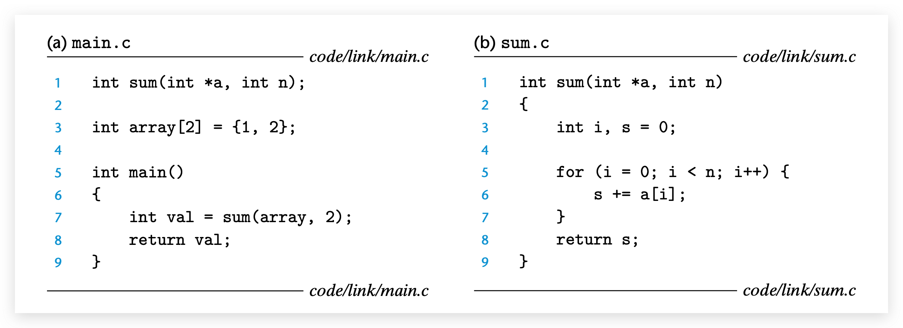
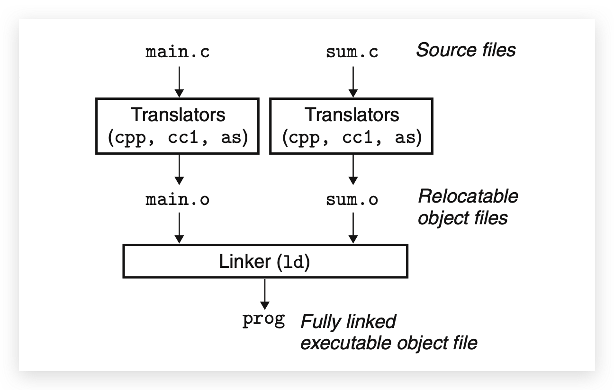
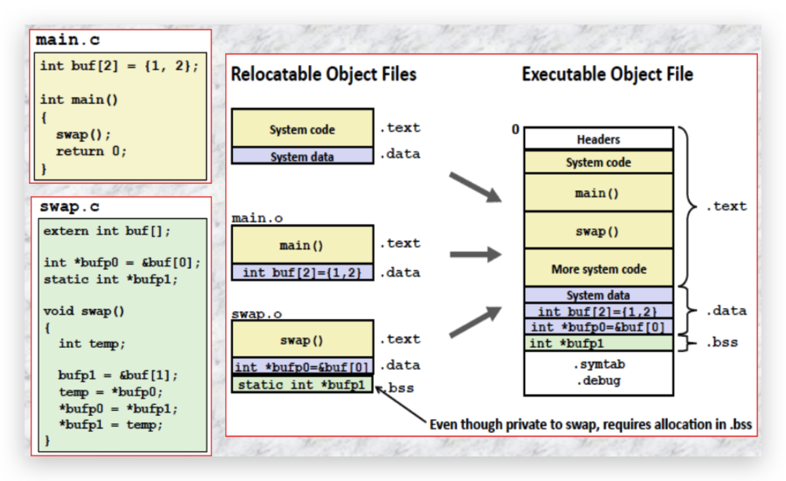
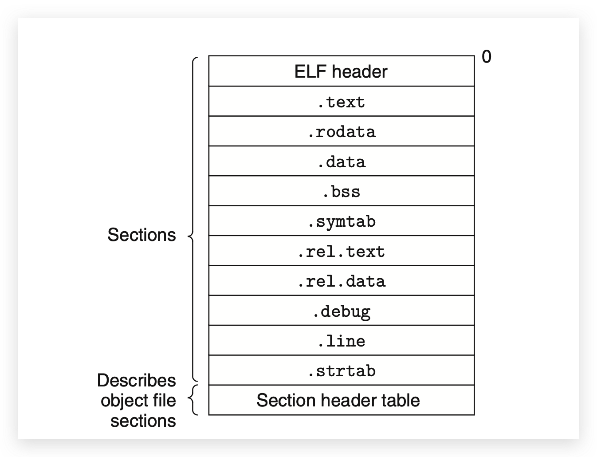
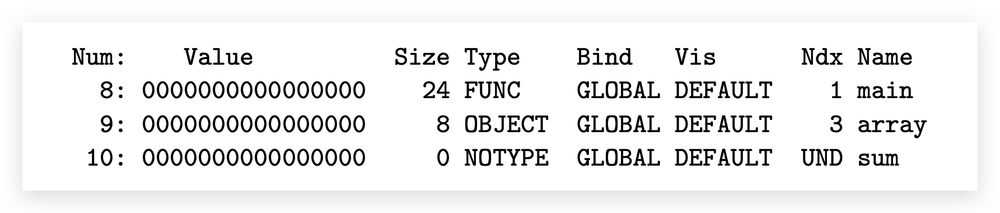

介绍
概念：
链接作用：将各种代码和数据片段收集并组合成一个单一文件的过程，这个文件可被加载到内存并执行
链接发生的时间：
- 编译时（compile time）：源代码被翻译成机器代码时
- 加载时（load time）：程序被被加载器Loader加载到内存并执行时
- 运行时（run time）：由应用程序来执行
这个过程早前是手动链接；现在由叫链接器Linker的程序来执行
早前写程序就在一个文件里面，为了分解成更小，更好管理的模块。分开单独编译
为啥要学习链接器的知识？
- 帮助我们编译大项目：缺少模块，缺少库，或者不兼容库的版本引起的链接器错误
- 避免一些危险的编程错误：Linux链接器解析符号引用时所做的决定可能会影响程序的正确性
- 帮助理解语言的作用域规则是如何实现的：全局变量和局部变量，static属性意味着什么
- 帮助理解其它重要系统概念：加载和运行程序，虚拟内存，分页，内存映射
- 能够去利用共享库：运行时使用共享库升级
静态链接，加载时的共享库的动态链接，运行时的共享库的动态链接；及链接问题在哪些情况中会影响程序的性能和正确性
内容大纲：
- Compiler Drivers
- Static Linking
- Object Files
- Relocatable Object Files
- Symbols and Symbol Tables
- Symbol Resolution
- Relocation
- Executable Object Files
- Loading Executable Object Files
- Dynamic Linking with Shared Libraries
- Loading and Linking Shared Libraries from Applications
- Position-Independent Code (PIC)
- Library Interpositioning
- Tools for Manipulating Object Files
- Summary
编译器驱动程序Compiler Drivers

编译器驱动程序会在用户需要时去调用语言的预处理器 language preprocessor、编译器compiler、汇编器assembler和链接器linker

# 调用gcc编译器驱动程序 |
静态链接Static Linking
Linux中ld静态链接器：将一组可重定位目标文件和命令行参数作为输入，生成一个完全链接的、可以加载和运行的可执行目标文件作为输出
链接器的两个主要任务：
- 符号解析（symbol resolution）：目标文件定义和引用符号，每个符号对应于一个函数、一个全局变量或一个静态变量。符号解析的目的是将每个符号引用正好和一个符号的定义关联起来
- 重定位（relocation）：首先，编译器和汇编器生成从0开始的代码和数据节（生成相对地址）。链接器重新通过把每个符号定义与一个内存位置关联起来，从而重定位这些节（代码和数据）；然后修改所对这这些符号的引用，使得它们指向对应的内存位置（定位引用）。
Relocation：

目标文件Object Files
目标文件分类：
- 可重定位目标文件Relocatable object file：包含二进制和数据，可以在编译里与其他可重定位目标文件合并起来，创建一个可执行目标文件
- 可执行目标文件Executable object file：包含二进制和数据，可以被直接复制到内存并执行
- 共享目标文件Shared object file：一种特殊类型的可重定位目标文件，可以在加载或者运行里被动态地加载进内存并链接
编译器和汇编器生成可重定位目标文件（包括共享目标文件）。链接器生成可执行目标文件
可重定位目标文件Relocatable Object Files
一个典型的ELF可重定位目标文件的格式：
ELF：Executable and Linkable Format

- ELF头：描述了生成该文件的系统字的大小和字节顺序
- 剩下部分：帮助链接器语法分析和解释目标文件的信息
- ELF头大小、目标文件的类型、机器类型、节头部表（section header table）的文件偏移，节头部表中条目的大小和数量
- 剩下部分：帮助链接器语法分析和解释目标文件的信息
主要节section部分：
- .text：已编译程序的机器代码
- .rodata：只读数据。比如
printf("hello world\n");中的hello world。 - .data：已初始化的全局和静态C变量
- .bss：未初始化的全局和静态C变量，以及所有被初始化为0的全局或静态变量。区分.data和.bss是为了空间效率，.bss区不需要占据任何实际的磁盘空间。运行时，在内存中分配这些变量，初始值为0
- .symtab：符号表。存放程序中定义和引用的函数、全局变量的信息
- .rel.text：一个.text节中位置的列表，当链接器把这个目标文件和其他文件组合时，需要修改这些位置。调用外部函数或者引用全局变量的指令都需要修改；另外，可执行目标文件不需要重定位信息，通常省略。
- .rel.data：被模块引用或定义的所有全局变量的重定位信息
- .debug：一个调试符号表，其条目是程序中定义的局部变量和类型定义，程序中定义和引用的全局变量，以及原始的C源文件。使用
-g选项时才会有这张表 - .line：原始C源程序中的行号和.text节中机器指令之间的映射。使用
-g选项时才会有这张表 - .strtab：一个字符串表，其内容包括.sybtab和.debug节中的符号表，以及节头部的节名字。字符串表就是以null结尾的字符串序列
.bss –> 块存储开始（Block Storage Start）。对比.data节，可以看成是“更好地节省空间（Better Save Space）的缩写
符号和符号表Symbols and Symbol Tables
符号：函数的定义和引用、全局变量（包含静态）。局部静态变量不在其中，分配在.data和.bss中
符号分类：
- 由模块m定义，并能被其它模块引用的全局符号。全局链接符号对应于非静态的C函数和全局变量
- 由其它模块定义并被模块m引用的全局符号。这些符号称为外部符号，对应于在其他模块中定义的非静态C函数和全局变量
- 只被模块m定义和引用的局部符号。对应于带static属性的C函数和全局变量。这些符号在模块m中任何位置都可见，但是不能被其他模块引用
static属性用来隐藏模块内部的变量和函数声明，类似Java和C++中使用的public和private声明一样，带有static声明的全局变量或者函数都是模块私有的。相反，任何不带static属性的全局变量和函数都是公共的，可以被其他模块访问。尽可能用static来保护你的变量和函数。
符号表
符号表就是一个条目的数组
条目格式：
typedef struct { |
解释：
- name：.strtab中的字节偏移，指向符号以null结尾的字符串的名字（名字存在.strtab中）
- value：符号地址。对于可重定位的模块来说，value是距定义目标的节的起始位置偏移。对于可执行文件来说，该值是一个绝对运行里地址
- size：目标的大小（以字节为单位）
- type：类型。数据、函数
- binding：表示是本地的还是全局的
- reserved：unused
- section：符号被分配到的节
- ABS：绝对值数字。代表不该被重定位的符号
- UNDEF：代表未定义的符号，表示在本模块中引用，在其它地方定义的符号。比如main.o的引用sum函数符号
- COMMON：表示还未分配位置的未初始化的数据目标
COMMON和.bss的区别，在现在GCC版本中：
- COMMON：未初始化的全局变量
- .bss：未初始化的静态变量，以及初始化为0的全局或静态变量
例：main.o的符号表：
$ readelf --symbols main.o |
省略了前面8个内部使用的条目

解释：
main是函数类型，它是一个位于.text节（Ndx为1）中，偏移量为0（value为0）的24字节函数
array是一个位于.data节（Ndx为3）中，偏移量为0（value为0）的8字节目标
sum是一个引用符号
符号解析Symbol Resolution
链接器解析符号引用的方法是：将每个引用与它输入的可重定位目标文件的符号表中的一个确定的符号定义关联起来。
C++和Java中都允许重载方法，这些方法在源代码中有相同的名字，却有不同的参数列表。
C++和Java中能使用，是因为编译器将每个唯一的方法和参数列表组合编码成一个对链接器来说唯一的名字。这种编码的过程叫重整mangling，而相反的过程叫恢复demangling